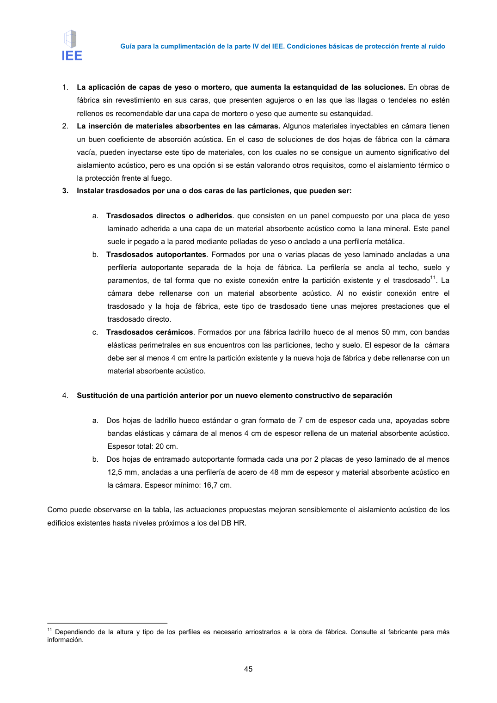

IEE 2016 · edición 2016-11-01 · capa guia
Documento GUIA-PDF-a5d4ef5252ba · SHA-256 del PDF 813669d3066c0ff79457d57b80b0512a4fbb248bc5db1f7baf473c369a064738
Copia fiel del PDF fuente · Fuente oficial
Ficha de la disposición en la fuente oficial
Créditos y autoría en el PDF fuente. Reproducción con cita de fuente y autores.
Permiso literal: Se permite la reproducción del contenido total o parcial de esta Guía siempre y cuando se haga citando la fuente original.
Guía para la cumplimentación de la parte IV del IEE. Condiciones básicas de protección frente al ruido
Dirección y coordinación
Luis Vega Catalán
Mª Cristina Colomo Fernández
Eduardo González de Prado
Dirección General de Arquitectura, Vivienda y Suelo. Ministerio de Fomento
Mª Teresa Carrascal García
Instituto de Ciencias de la Construcción Eduardo Torroja. IETcc- CSIC
Autores
Mª Teresa Carrascal García
Amelia Romero Fernández
Mª Belén Casla Herguedas
Unidad de Calidad en la Construcción del Instituto de Ciencias de la Construcción Eduardo Torroja IETcc- CSIC
Se agradece la colaboración de
Belén Delgado Giménez
Fundación FIDAS
Alberto Esteban González
C.T.O. Estudios y proyectos – Gikesa
Giovanni Muzio
C.T.O. Estudios y proyectos
Francisco Labastida Azemar
Arquitecto, asesor CSCAE
Pedro F. Nogueira López
Universidad de A Coruña
Alejandro Sansegundo Sierra
Acústica SanSegundo
Esta Guía para la cumplimentación de la parte IV del IEE. Condiciones básicas de protección frente al ruido, nace en el marco del
convenio de colaboración llevado a cabo entre el Ministerio de Fomento y el Instituto de Ciencias de la Construcción Eduardo Torroja y
forma parte de la estrategia de este Ministerio de generar una serie de documentos de ayuda que faciliten la aplicación de la normativa
de la edificación y que en este caso concreto, ofrezca a los técnicos criterios para poder realizar una evaluación del estado inicial de las
edificaciones en lo referente a las condiciones acústicas de las viviendas existentes y plantear medidas que incrementen su confort
acústico.
En la redacción de este documento se ha utilizado algunos de los contenidos y de las figuras de la Guía de aplicación del DB HR
Protección frente al ruido. Dicha guía puede consultarse en:
http://www.codigotecnico.org/index.php/menu-documentos-complementarios/menu-guia-aplicacion-db-hr
Se permite la reproducción del contenido total o parcial de esta Guía siempre y cuando se haga citando la fuente original.
2Formatos: JSON del segmento · Markdown
A2.2 Medidas de mejora La tabla A2.3 sirve de ayuda para definir las medidas de mejora posibles en los elementos de separación verticales. Muestra los niveles de aislamiento acústico finales que pueden obtenerse tras diferentes intervenciones. Para cada intervención, la tabla A2.3 indica con una escala de colores el nivel de aislamiento acústico a ruido aéreo que se obtendría in situ en los edificios, expresado como diferencia de niveles estandarizada, DnT,A. Este valor es orientativo, ya que el aislamiento acústico entre recintos depende de otros factores, como son los elementos de flanco, sus uniones y la ejecución de cada una de las soluciones. Cuando se indican dos niveles, el nivel inferior corresponde a valores de aislamiento obtenidos cuando no se ha modificado los elementos de flanco y el valor mayor corresponde al valor de aislamiento cuando se ha producido una intervención en la fachada o en los tabiques con objeto de limitar las transmisiones indirectas. (Véanse figuras A2.1 a A2.4). En la columna “Medidas de mejora. Recomendaciones”, aparecen algunas de las intervenciones posibles que pueden utilizarse para la definición de las medidas de mejora recomendables y que se enumeran a continuación. Las medidas descritas no constituyen una lista exhaustiva, pudiéndose emplear otro tipo de medidas. II III IV IV III Guía para la cumplimentación de la parte IV del IEE. Condiciones básicas de protección frente al ruido 45 1. La aplicación de capas de yeso o mortero, que aumenta la estanquidad de las soluciones. En obras de fábrica sin revestimiento en sus caras, que presenten agujeros o en las que las llagas o tendeles no estén rellenos es recomendable dar una capa de mortero o yeso que aumente su estanquidad. 2. La inserción de materiales absorbentes en las cámaras. Algunos materiales inyectables en cámara tienen un buen coeficiente de absorción acústica. En el caso de soluciones de dos hojas de fábrica con la cámara vacía, pueden inyectarse este tipo de materiales, con los cuales no se consigue un aumento significativo del aislamiento acústico, pero es una opción si se están valorando otros requisitos, como el aislamiento térmico o la protección frente al fuego. 3. Instalar trasdosados por una o dos caras de las particiones, que pueden ser: a. Trasdosados directos o adheridos. que consisten en un panel compuesto por una placa de yeso laminado adherida a una capa de un material absorbente acústico como la lana mineral. Este panel suele ir pegado a la pared mediante pelladas de yeso o anclado a una perfilería metálica. b. Trasdosados autoportantes. Formados por una o varias placas de yeso laminado ancladas a una perfilería autoportante separada de la hoja de fábrica. La perfilería se ancla al techo, suelo y paramentos, de tal forma que no existe conexión entre la partición existente y el trasdosado11. La cámara debe rellenarse con un material absorbente acústico. Al no existir conexión entre el trasdosado y la hoja de fábrica, este tipo de trasdosado tiene unas mejores prestaciones que el trasdosado directo. c. Trasdosados cerámicos. Formados por una fábrica ladrillo hueco de al menos 50 mm, con bandas elásticas perimetrales en sus encuentros con las particiones, techo y suelo. El espesor de la cámara debe ser al menos 4 cm entre la partición existente y la nueva hoja de fábrica y debe rellenarse con un material absorbente acústico. 4. Sustitución de una partición anterior por un nuevo elemento constructivo de separación a. Dos hojas de ladrillo hueco estándar o gran formato de 7 cm de espesor cada una, apoyadas sobre bandas elásticas y cámara de al menos 4 cm de espesor rellena de un material absorbente acústico. Espesor total: 20 cm. b. Dos hojas de entramado autoportante formada cada una por 2 placas de yeso laminado de al menos 12,5 mm, ancladas a una perfilería de acero de 48 mm de espesor y material absorbente acústico en la cámara. Espesor mínimo: 16,7 cm. Como puede observarse en la tabla, las actuaciones propuestas mejoran sensiblemente el aislamiento acústico de los edificios existentes hasta niveles próximos a los del DB HR. 11 Dependiendo de la altura y tipo de los perfiles es necesario arriostrarlos a la obra de fábrica. Consulte al fabricante para más información. Guía para la cumplimentación de la parte IV del IEE. Condiciones básicas de protección frente al ruido 46 Tabla A2.3 Aislamiento acústico entre recintos colindantes horizontalmente según el tipo de
